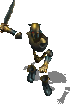
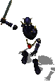
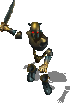
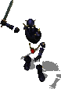

Introduction
Avez-vous déjà désiré
qu'Athkatla soit un peu plus vivante ? Voulu savoir comment Biff
s'était retrouvé avec le surnom d'inculte ?
Souhaité que les marchands aient plus de deux lignes de
dialogue chacun ? Qu'ils aient leur propre vie ?
Avez-vous déjà souhaité pouvoir acheter des Bottes
de Rapidité qui auraient l'air un peu plus, comment dire,
pimpantes ? Pensé à acheter des Bottes Roses de
Furtivité à Imoen ? Voulu que le Nuage Puant qui se forme
autour de votre groupe après plusieurs jours de voyage sans
prendre de bain trouve un but vraiment utile ?
Ne perdez plus votre temps à souhaiter tout cela !
Maintenant qu'Aurora est là, vous
pouvez avoir accès à toutes ces choses et plus
encore !
Aurora's Shoes and Boots ajoute plus d'une vingtaine de nouvelles
paires de bottes, à la fois utiles et stylées. De plus,
Aurora elle-même est là pour ajouter un peu de piment dans
la vie d'Athkatla. Elle discutera avec vous des nobles comme
des gens du peuple, vous fournissant des informations excitantes
(à défaut d'être toujours exactes) sur leurs vies
quotidiennes.
Vous ferez
également la connaissance du vendeur de nuit de la
boutique, Tomthal le gnome grincheux, condamné à
vivre à la surface par une malédiction
mystérieuse, et de la représentante itinérante du magasin,
Karaea, la soeur chaleureuse de Tomthal.
•Retour en haut
Compatibilité
Ce mod fonctionne avec BG2 :
Shadows of Amn, avec ou sans l'extension Throne of Bhaal. Si vous
n'avez pas installé Throne of Bhaal, vous manquerez certains
objets disponibles uniquement dans cette
partie du jeu. Assurez-vous que votre jeu utilise bien la
dernière version du patch. Vérifiez le fichier ReadMe
traitant de votre patch dans votre répertoire de jeu et sur le
site internet de BioWare
si nécessaire.
Ce mod fonctionnera également avec tous les mods,
y compris Baldur's
Gate Tutu (et EasyTutu) et Baldur's Gate Trilogy.
Aurora et Tomthal n'apparaîtront pas dans la version Tutu, mais Karaea
sera de la partie.
Aurora's Shoes est maintenant compatible avec la conversion
totale Classic Adventures
(Karaea voyage vers Port Ponant et les donjons de Suderham).
En théorie, le mod doit également être
compatible avec Return
to Trademeet (Karaea retourne également
à Franc-marché).
Ce mod devrait figurer plutôt tardivement dans l'ordre
d'installation : idéalement après les
patchs et les fixpacks et avant les procédures finales de
"biffing" (archivage). Il devrait
aussi s'installer après les autres mods qui ajoutent des
créatures et après tous les mods qui écrasent
les ressources du jeu plutôt que de les modifier.
Si vous voulez que les (quelques) armes de ce mod soient
affectées par les "restrictions logiques des armes" du mod
"Ashes of Embers", il importe peu que vous installiez Aurora's shoes
avant ou après AoE.
Si vous voulez ces modifications d'armes dans Level 1 NPCs,
cependant, installez ce dernier après Aurora.
Nous recommandons fortement de
commencer une nouvelle partie pour jouer à ce mod, ou vous
allez passer à côté d'une grande partie
du contenu. Dans tous les cas, vous ne devez pas
avoir visité le quartier du pont ou Naskhel avant de jouer
avec ce mod, ou vous pourriez subir des problèmes de rupture de jeu.
•Retour en haut
Installation
Note : Si vous avez
déjà installé une version du mod,
supprimez-la avant d'extraire la nouvelle version. Pour cela, lancez
setup-aurora.exe (ou .command), désinstallez tous les
composants précédemment installés et supprimez le
répertoire Aurora. Lorsque vous installez ou
désinstallez, ne fermez pas la fenêtre DOS en
cliquant sur le bouton X ! A la place,
pressez le bouton Entrée
lorsque l'invite de commande vous le demande.
Vous pouvez extraire les fichiers de l'archive en utilisant WinRAR, ZipGenius
ou tout autre utilitaire de décompression de fichiers qui
sache gérer des fichiers .rar.
Windows
Extrayez le contenu du mod vers le répertoire du jeu que
vous voulez modifier (BG2,
BGT
ou EasyTutu). Si l'extraction se passe bien, vous devriez avoir un
répertoire aurora contenant un fichier setup-aurora.exe dans
votre répertoire de jeu. Pour l'installer, double-cliquez
simplement sur setup-aurora.exe et suivez
les instructions qui apparaissent à l'écran.
Lancez setup-aurora.exe dans
votre répertoire de jeu pour réinstaller,
désinstaller ou changer des composants.
Mac OS X
Extrayez le contenu du mod dans le répertoire du jeu que
vous
voulez modifier. Si l'extraction se passe bien, vous devriez avoir un
répertoire aurora contenant un fichier setup-aurora.command
dans
votre répertoire de jeu. Téléchargez
la version OS
X de WeiDU
(ou copiez l'exécutable d'un autre mod) et renommez-le
setup-aurora. Copiez-le ainsi que le fichier
setup-aurora.command dans le sous-répertoire Aurora
dans le répertoire principal de votre jeu. Pour l'installer,
double-cliquez simplement sur setup-aurora.command et suivez
les instructions qui apparaissent à l'écran.
Linux
Extrayez le contenu du mod dans le répertoire du jeu que
vous voulez modifier. Téléchargez la
dernière version de Linux WeiDU
et copiez WeiDU et WeInstall dans /usr/bin. Ensuite, ouvrez un terminal
et placez-vous (cd) dans le répertoire d'installation de BG2.
Optionnel : lancez 'tolower' et répondez 'Y'
aux deux questions. Vous pouvez évitez de lancer la seconde
version (linux.ini) si vous l'avez déjà lancée au
moins une fois dans le même répertoire. Pour gagner du
temps, l'archive a déjà été traitée
par tolower, il n'y a donc pas d'obligation de lancer la
première option (Mettre en minuscule les noms de fichiers)
non plus, si vous avez extrait uniquement ce mod depuis la
dernière fois que vous avez mis en minuscule le nom des fichiers. Si vous
n'êtes pas certain/e, lancer tolower et choisir les deux options
est la solution la plus sûre.
Lancez WeInstall setup-aurora
dans votre répertoire de jeu pour installer le mod. Lancez
ensuite wine BGMain.exe et commencez
à jouer.
•Retour
en haut
Composants
Tous les composants sont optionnels. Certains sont
spécifiques à la plateforme comme
indiqué
ci-dessous.
Aurora's Shoes and Boots
C'est le composant principal décrit ici. Cependant, vous
n'avez pas besoin de l'installer si vous voulez seulement installer les
autres options.
Les petits portraits pour les PNJs
Requiert le composant principal
Ce composant propose deux options pour installer des portraits :
1. Les marchands
ajoutés par le mod, et quelques autres PNJs avec
lesquels le mod interagit.
2. Seulement les
marchands Aurora, Tomthal et Karaea.
Bien entendu, vous pouvez passer outre les portraits si vous
préférez.
Raccourcir la scène de la bataille de Gorion
Non-BG2
Ce composant est principalement une commodité pour tester le
jeu, mais est également utile pour le joueur qui a vu le
combat de Gorion trop souvent. Il va grandement le raccourcir, vous permettant
de jouer pratiquement immédiatement après avoir
quitté Château-Suif. Tout le reste dans le jeu se
déroule comme si vous aviez attendu la fin du combat. S'il est
combiné avec le composant "Passer Château-Suif" de Sword Coast
Stratagems, vous pourrez explorer le pays après
quelques secondes.
Raccourcir les intros de BG2
Non-Tutu
Ce composant est principalement une commodité pour tester le
jeu, mais est également utile pour le joueur qui a vu la
première scène dans le donjon d'Irenicus trop
souvent. Il va la réduire et passer le dialogue linéaire avec
Imoen, vous permettant de jouer immédiatement. Tout le reste du jeu
se déroule comme si vous aviez assisté à tout cela.
S'il est combiné avec Dungeon-Be-Gone,
vous pouvez vous retrouver à Athkatla en une
poignée de secondes, et vous n'avez plus qu'un pas
à faire pour acquérir de nouvelles bottes, si
vous pouvez vous les offrir. Ce composant possède trois
options :
1. Raccourcir la
première scène dans le Donjon d'Irenicus.
2. Raccourcir la
première scène ainsi que la séquence
de bataille entre Irenicus et les Mages Cagoulés dans la
Promenade de Waukyne.
3. Raccourcir les
deux scènes précitées ainsi que la
scène avec les Mages Cagoulés qui envoie le
joueur à Spellhold après les pourparlers avec
Gaelan Bayle.
Changer les prix d'achat des magasins
Ce composant est une révision du mini mod de GeN1e "Store
Prices". En jouant à plusieurs mods différents
pour Baldur's Gate,
il a remarqué une chose déplaisante -
pratiquement tous les mods ajoutent des ennemis qui
possèdent des butins très onéreux. Si cela
ne vient pas des créatures, ce sont les zones qui sont
parsemées de coffres plein de trésors. En jouant
une combinaison de mega-mods, il avait environ 600 000
pièces d'or au chapitre 6 ! Dans le jeu original, on a du
mal à dépasser les 100 000 à ce niveau du jeu. Face
à ce manque de défis, GeN1e commença
à perdre son intérêt pour le jeu. Afin
d'éviter cela, il décida d'ignorer
toute récompense surajoutée, mais
c'était difficile, car il
ne se souvenait pas si chaque pièce provenait du jeu
original et par conséquent risquait d'en collecter plus que
désiré.
La seconde raison d'être de ce composant : l'auteur est le style
de personne qui (surprise !) essaie de rassembler le plus de choses
possibles. Du moins, jusqu'à ce que cela devienne ennuyeux.
Alors qu'il apprenait à modder, GeN1e se posa la
question suivante : pourquoi ne pas créer un mod
qui augmenterait considérablement les prix
dans les magasins afin d'avoir un moyen de dépenser ces millions ?
Il aimait l'idée mais réalisa rapidement que la
méthode serait grossière, bien qu'efficace. Alors
pourquoi ne pas plutôt baisser les prix de rachat ? Cela
pourrait éliminer
le besoin de ramasser tout et n'importe quoi - si une armure
lourde ou des épées (des épées
à deux mains +1 par exemple) ne rapportent que 10-20 pièces en les
vendant à un marchand, il n'y a absolument aucun plaisir
à les ramasser. Et même mieux - en augmentant à la
fois les prix d'achat et de vente, on rend de la valeur aux objets tout en la
supprimant en ce qui concerne l'argent (l'inflation, pour ceux qui
l'ignorent). Ou exactement l'inverse, si vous
préférez :
les objets ne coûtent rien et seules les récompenses en argent
sont d'un réel intérêt.
Ce composant vous permet de réduire les prix dans toutes les
boutiques qui achètent des objets, jusqu'à 25% de
leur coût initial, ou de les augmenter jusqu'à 300%. Cela
affectera, bien entendu, les objets d'Aurora et ceux de tous les autres mods
installés avant celui-ci. La valeur recommandée pour une
installation de méga-mods typique est une réduction
à 67% (les deux tiers de la valeur originale).
Changer les prix de vente des magasins
Comme au-dessus, ce composant provient également du mini-mod
"Store Prices". Il vous permet de réduire les prix auxquels
un magasin vend ses objets jusqu'à 50% ou de les augmenter
jusqu'à 500%. Cela affectera les objets d'Aurora et ceux de
tout autre mod installé précédemment. La
valeur recommandée pour une installation typique d'un
méga-mod est une augmentation de 150%.
Changer les prix des gemmes et des bijoux
Basé sur le mini-mod "Store Prices" (mais non inclus dans
celui-ci), ce composant vous permet de changer les prix des gemmes,
des anneaux et colliers non-magiques. Comme ils sont gagnés
la plupart du temps en fouillant un cadavre, cela changera le total
d'argent acquis. Il se cumulera avec les composants ci-dessus, s'ils
sont également installés. Le composant va
réduire les prix de toutes les gemmes et de tous les objets de
joaillerie jusqu'à 10% ou les augmenter jusqu'à 200%. La
valeur recommandée pour une installation typique d'un
méga-mod est une réduction à 67% (puisqu'il s'agit d'un
nouveau composant, cela demande confirmation).
Changer l'or des récompenses de
quête
Basé sur le mini-mod "Store Prices" et sur Ding0 Experience Fixer,
ce composant vous permet de changer la quantité d'or
gagnée en récompense de quête et via d'autres
interactions avec les PNJs.
Il devrait fonctionner avec les quêtes du jeu standard comme avec
la plupart du contenu ajouté par les mods, incluant Aurora. Il
change les montants mentionnés dans les dialogues ainsi que ceux
obtenus réellement en récompense. De plus, il corrige un
comportement buggé où certains PNJs
pouvaient ne pas avoir assez d'argent sous la main pour offrir la
récompense qu'ils avaient promis (à moins que cela ne
fasse partie de leur dialogue). Ce composant est parfaitement
compatible avec un des suivants (Changer l'or transporté par les
créatures). Cependant, dans un souci d'efficacité, cela
n'affectera pas les récompenses en dessous de 100 pièces d'or,
et seulement quelques-unes de celles qui sont
égales à 100 pièces d'or (là où le
changement a un sens). Les choix varient de 10% à 90% des
récompenses de la quête originale. Vous pouvez
également choisir de ne pas modifier les récompenses
existantes mais de seulement implémenter les correctifs
décrits ci-dessus.
Trésors aléatoires
réalistes
De nombreuses créatures dans le jeu transportent des objets qui
leur donnent des chances de faire apparaitre des trésors
aléatoires de types variés. Plusieurs joueurs ont
critiqué le fait de récupérer
des parchemins magiques de haut niveau sur des gnolls, ogres et d'autres
créatures typiquement non versées dans la magie,
et même analphabètes dans certains cas. Ce composant
change cet état de fait.
Il empêche les créatures de certaines classes d'obtenir
des parchemins, bien qu'elles puissent porter d'autres
trésors aléatoires comme des gemmes ou des bijoux. Les
créatures exclues sont les basilics, goules, revenants,
momies, gnolls, tous les types d'ogre sauf les ogres-mages, spectateurs,
trolls, ombres des roches, créatures de brume,
élémentaires de feu et zombies. De surcroît, les
créatures invoquées et celles dotées d'une intelligence
inférieure à 10 sont également concernées. Bien
que ce seuil soit purement arbitraire, il a pour effet d'exclure la plus grande
partie de la racaille humanoide (comme les
kobolds et les orques) de la possession de parchemins, sauf
s'ils sont lanceurs de sorts ou possèdent d'autres signes
d'instruction. Pour représenter cela, certaines
créatures ont reçu un bonus ou un malus mineur en
intelligence pour rendre la caractéristique plus
appropriée. Cela ne devrait pas avoir d'autre effet notable
dans le jeu.
Ce composant corrige également le poids et d'autres
problèmes avec les tables de trésors aléatoires.
Par exemple, les créatures "pauvres" ne devraient jamais
posséder des parchemins qui valent plus de 100 pièces
d'or. Plusieurs options sont possibles pour l'installation :
1. Suppression des
trésors aléatoires dupliqués
2. Seules les
créatures intelligentes ont des parchemins aléatoires
3. Les deux, 1 et 2
(sans perte de trésors)
4. Les deux, 1 et 2
(25% de perte de trésors)
5. Les deux, 1 et 2
(50% de perte de trésors)
6. Les deux, 1 et 2
(75% de perte de trésors)
7. Suppression de
tous les trésors aléatoires
Avec la première option (inclue également dans les
options 3 à 6), toutes les créatures avec plus d'un
trésor aléatoire ne vont garder que le dernier
dans leurs inventaires. Au mieux, cela constituait une récompense bien
trop grande pour les créatures affectées. Au pire, il
est possible qu'il s'agisse d'une erreur, dans la mesure où
certaines créatures font référence
à un objet unique en plus d'un exemplaire sans aucune raison apparente.
Les exceptions a cette règle sont les dragons et les liches, qui
peuvent posséder plusieurs trésors
aléatoires, comme on peut s'y attendre.
La seconde option (inclue également dans les options 3 à
6) constitue la particularité principale décrite
au-dessus. La troisième option est une combinaison des deux
premières et est probablement l'option a choisir pour les
jeux avec un faible nombre de mods.
Les options quatre à six combinent les deux
caractéristiques. En plus, elles donnent une chance de "perte"
des trésors aléatoires. Avec l'option 4, une
créature sur 4 qui possédait un trésor
aléatoire n'en aura plus. L'option 5 augmente ce chiffre
à 1 chance sur 2, tandis que la probabilité passe
à trois chances sur quatre avec l'option 6. Ces options sont
vraisemblablement adaptées pour de grandes installations de
méga-mods. L'option 7 est la plus extrême, supprimant tous
les trésors aléatoires dans le jeu. Notez qu'aucune de
ces options ne modifie les trésors spécifiques
que les créatures auront toujours. Cela affecte uniquement
les trésors aléatoires qui
varient d'une partie à l'autre.
Ce composant requiert au minimum trois lignes disponibles soit dans la
table des trésors aléatoires (rndtreas.2da), soit dans la
table des objets magiques aléatoires (rndmagic.2da), bien qu'il
s'installe partiellement si les tables sont pleines. La seule
configuration connue où cela s'applique est quand Check the Bodies est
installé après
BGT.
L'ordre recommandé, cependant, est d'installer CtB avant
BGT.
Changer l'or transporté par les
créatures
Basé sur le mini-mod "Store Prices" (mais non inclus dans
celui-ci), ce composant vous permet de changer la quantité d'or
transportée par les créatures, que vous pouvez
donc récolter en fouillant leur corps. En l'installant, vous
pourrez réduire la quantité d'or d'une
créature
jusqu'à 10%, ou l'augmenter jusqu'à 200%. La valeur
recommandée pour une installation typique de méga-mods est
une réduction de 50% (bien qu'étant un nouveau composant,
cela demande confirmation). Il va aussi affecter les quantités
d'or aléatoires délivrées par les tables de
trésor et est complètement compatible avec le
composant précédent à ce niveau.
Version papier des Horreurs casquées et de Bataille
Non-BG2
(sauf en cas de mod)
Une ramification du composant "Trésors aléatoires
réalistes", cette option rend les redoutables armures
animées plus proches de leur incarnation dans le jeu de
rôle sur table. Elles sont maintenant immunisées
à l'absorption de capacité, à l'absorption de
niveau, à l'immobilisation, à la peur et aux autres sorts
basés sur l'esprit. Comme elles possèdent la capacité de
Marcher dans les Airs,
elles ne sont pas gênées par des sorts comme glisse et
toile d'araignée. Les horreurs sont immunisées
aux projectiles magiques, Boules de Feu, Eclair et Tempête de
Glace, ainsi qu'aux sorts nécromantiques. Elles voient les
êtres invisibles naturellement. Les horreurs utilisent des armes à
distance, principalement des arbalètes. Elles peuvent
également enchanter leurs armes de
mêlées avec une flamme magique, bien que les armes en
elles-mêmes soient habituellement normales. En plus, les Horreurs de
Bataille possèdent des habilités apparentées à
la magie telles que le Projectile Magique ou la Porte Dimensionnelle.
Ce composant va affecter les Horreurs de Bataille et
Casquées que l'on trouve dans
Tutu
et BGT.
Il affectera également le Prophète du Malheur et
certains protecteurs de la Tour de Durlag (comme discuté ici).
Il est compatible avec les changements que SCS
apporte aux horreurs, qui sont d'une nature différente. Il
ne sera pas pris en compte par BG2,
sauf s'il détecte un mod qui ajoute des horreurs, comme Quest Pack
ou Planar Sphere.
Les Horreurs auront des animations spécifiques si vous avez
installé une version ToB. Sinon, nous recommandons d'installer
le composant Flaming
Swords de One Pixel Productions, pour que les horreurs puissent avoir des
armes animées de manière adéquate. Ce mod peut être
installé avant ou après ce composant, cela ne change rien.
Commandos Kobolds Réalistes
Une subdivision du composant "Trésors aléatoires
réalistes", cette option rend ces petites fripouilles
malhonnêtes un peu plus réalistes, comme discuté ici
. Comme les commandos Kobolds n'ont pas d'équivalent dans la version
papier de Donjons et Dragons, ce composant
leur donne des valeurs plus proches des gardes du corps Kobolds qu'on y
retrouve.
En bref, les Flèches de Feu sont modifiées pour les rendre
conformes à leur description par défaut et ce que
l'on pourrait attendre d'un projectile enflammé non magique. Elles ne
font plus qu'1d2 dégâts supplémentaire de feu qui
n'est pas sujet à un jet de sauvegarde. Les commandos
n'auront que deux flèches enflammées (bien qu'ils aient
des carquois remplis de flèches normales), donc il vous
appartient de tuer les petites fripouilles (autrefois malhonnêtes) le
plus vite possible. En compensation, les kobolds gagnent une
légère amélioration de leurs jets de
sauvegarde et de leurs bonus de compétence (deux étoiles en
épées courtes et arcs courts) comme c'est le cas
pour les guerriers de niveau un. Ce composant est compatible avec les commandos
kobolds modifiés ou ajoutés par SCS
et les autres mods.
•Retour en haut
Foire Aux Questions
Q : Qui est Aurora ? Que fait-elle à
Athkatla ?
R : Aurora est une guerrière à la retraite qui adore les
chaussures. Elle a passé ses jeunes années
à combiner son goût pour l'aventure avec son amour
des chaussures, combattant partout où se faisait ressentir le
besoin d'embaucher une fine lame et achetant de nouvelles et exotiques
chaussures (quand ses finances le lui permettaient). En fin de compte,
ressentant le besoin d'une vie plus sédentaire, elle loua
une échoppe dans le quartier du Pont à Athkatla et
ouvrit sa propre
boutique de chaussures. Grâce son vaste savoir et sa
familiarité avec des
pays lointains, elle est capable de vendre des objets uniques,
introuvables ailleurs.
Sa passion pour les ragots est pratiquement à la
hauteur de son amour pour les chaussures, et elle sera heureuse de
partager des informations sur la ville avec tous ceux qui voudront
l'écouter.
Q : Attendez, comment Tomthal et Karaea
sont-ils impliqués dans tout ceci ?
R : Aurora ne peut pas être dans sa boutique de chaussures
tout le temps. Pendant la nuit, Tomthal fait tourner le magasin. C'est un
Svirfneblin contraint de vivre à la surface par une
malédiction.
Karaea est sa soeur, une joyeuse marchande itinérante que
vous pourrez rencontrer à Franc-Marché et,
peut-être également à Nashkel et à
Amkethran. Alors qu'Aurora et Tomthal dorment tous deux quand ils ne
gardent pas la boutique, Karaea a appris la capacité de
rêverie d'un ancien ami elfe. La nuit, elle médite
dans un jardin privé mais vendra des objets si vous la
réveillez.
Q : Est-il question d'une quête ?
R : Oui et Non. Aurora, Tomthal et/ou Karaea pourraient demander un
service ou deux à votre groupe.
Q : Qu'en est-il des nouvelles zones ?
R : C'est amusant que vous posiez la question. La rumeur
prétend
qu'il y a des bandes de gobelins qui parcourent la région -
certains se planquent peut-être même dans de
nouvelles grottes qu'une équipe intrépide pourrait
découvrir.
Vous pourriez également trouver le domicile privé
des marchands dans leurs districts respectifs.
Q : De combien de dialogues parle-t-on au
juste?
R : Aurora connait une vingtaine de potins (si vous lui demandez), un ou
deux dialogues spécifiques à chaque PNJ de
Bioware et une poignée de dialogues avec le PJ. Tomthal et Karaea ont une quantité
moindre de dialogue, mais il est spécifique à chacun.
Il y a également quelques petits ajouts
"intermods", si vous avez installé MTS Crappack ou
Tales
of the Deep Gardens. En définitive, il y aura des
ajouts disponibles à travers Crossmod,
incluant des échanges avec Solaufein, Kelsey, Hubelpot et
d'autres.
Q : Et de combien de paires de chaussures ?
R : Il y a plus de trente paires de bottes de styles divers.
Vous pouvez acheter la plupart auprès des marchands, ou les
mélanger avec d'autres bottes pour créer des
chaussures de qualité supérieure. Vous pourriez
également tomber sur d'autres objets.
Q : Pourquoi ne suis-je pas en mesure de
trouver tous les objets ?
R : Essaie encore, petit scarabée ;). Quelques-uns des
objets sont vraiment aléatoires et une partie d'entre eux
sont plutôt rares. Défaire les ennemis en grande
quantité pourrait porter ses fruits. D'autres objets sont
obtenus seulement dans des circonstances spécifiques ou sur
certaines plateformes. D'autres objets encore apparaissent dans les
magasins autres que celui d'Aurora - ceux-là sont
également aléatoires.
Q : Comment faire si je ne veux pas d'une
vendeuse bavarde ?
R : Si vous ne voulez pas discuter avec Aurora et que vous ne voulez pas
l'écouter parler avec les PNJ,
dites-lui que vous ne voulez plus l'entendre, plus jamais, et le
dialogue prendra la forme d'un vendeur classique. Vous pouvez aussi
vous excuser pour lui avoir dit de se taire et vous pourrez alors
entendre d'autres potins de sa part, si vous le voulez.
•Retour
en haut
Dépannage
Voici des conseils d'ordre général si vous rencontrez
des problèmes pour faire fonctionner le jeu, que ce soit
avec ou sans mods. Souvent, les erreurs sont liées au moteur du jeu
ou à la manière d'installer ou de jouer. Le jeu
recommande de supprimer tous les fichiers des répertoires /cache /temp
et /tempsave dans le répertoire du jeu pour voir si cela
résout le problème avant tout autre
dépannage.
Symptôme : le jeu se bloque ou provoque un retour sur le bureau
de Windows
Quand ceci se produit, le jeu affiche parfois une erreur d'assertion
("assertion error") dans une fenêtre pop-up mais ce n'est pas
toujours le cas. Pour que le message d'erreur complet s'affiche, ouvrez
le fichier baldur.ini (qui se trouve dans le
répertoire du jeu) avec un éditeur de texte (par exemple
le bloc-notes). Si vous êtes sous Windows Vista et n'arrivez pas
à éditer ce fichier ou à sauvegarder vos
modifications, consultez ce sujet pour plus d'informations.
Dans la section [Program Options] de ce fichier, tapez Logging On=1
(à moins que cette instruction ne soit déjà
présente). Il est également intéressant de
vérifier que l'instruction Debug Mode=1 est bien
présente, ce qui permet d'activer la Console CLUA
pour déboguer et effectuer des tests. Sauvegardez le fichier et
refermez-le. Lancez à nouveau le jeu et tentez de reproduire
l'erreur. Cherchez ensuite dans le répertoire du jeu le fichier
Baldur.err et ouvrez-le avec un éditeur de texte de
façon à analyser son contenu.
Symptôme
: Le jeu crashe sans la présence de logs dans baldur.err et montre soit
un écran noir, soit une fenêtre pop-up indiquant une
erreur à l'offset 005ca8a8
Cela indique généralement un
problème d'animation. Vérifiez que vous avez la
dernière version du mod. Si vous avez installé
d'autres mods ensuite et avez ce problème, installez le fix
disponible ici.
ERROR: error
copying [aurora/bam/somefile.bam]
ERROR: [SOMEFILE.CRE]
-> [override/SOMEFILE.CRE] Patching failed (COPY)
Stopping installation
because of error. (sans aucun autre message d'erreur)
Ce genre de messages dépourvus de valeur informative dans ce
genre peuvent indiquer que vous êtes en train d'installer le
mod sur un disque dur avec un taux de transfert de données
bas ou qu'un programme antivirus est actif pendant l'installation (ce
qui peut aussi affecter le transfert de données). Essayez
d'installer le mod sur un disque interne avec la protection antivirus
désactivée pendant l'installation. Si vous
n'êtes pas certain, déconnectez-vous d'internet
pendant l'installation (soit en débranchant votre câble réseau,
soit en déconnectant votre adaptateur wifi) et fermez tous
les programmes qui résident dans la mémoire
pendant l'installation. Pour obtenir une liste de ceux-ci, allez dans
Démarrage -> Exécuter et tapez msconfig
là où il est indiqué "Ouvrir".
Ensuite, cliquez sur OK. Quand l'utilitaire de configuration du
système apparaît, cliquez sur le bouton de
démarrage. Les seuls programmes qui sont
réellement nécessaires d'être
chargés en mémoire au démarrage sont
ceux qui sont liés à votre puce graphique
(typiquement ATI ou NVIDIA). Décochez tout le reste,
redémarrez et essayez à nouveau d'installer les
mods. Il y a des problèmes bien documentés
liés à l'installation de mods quand l'antivirus
Avast est activé, d'où, vérifiez bien
que tous les composants d'Avast sont complètement
désactivés.
Assertion failed in ChDimm.cpp at line #7641
Exp: pBiffHeader->dwFileType != mmioFOURCC('B', 'I', 'F', 'C')
Msg: c:\{path}\bg2\cd#\DATA\BIFNAME.BIF: attempted to use compressed
BIF from CD, check free hard drive space
Parfois, le BIF référencé peut exister, mais
le jeu s'attend à le trouver dans le répertoire principal
\data ou dans \cache\data. Le copier depuis le répertoire
cd# (ou du CD lui-même) va marcher quelques fois. Pour les autres
fois, vous aurez besoin de DLTCEP
pour décompresser le BIF. Pour ce faire, utilisez Extraction
> Uncompress BIF.
Le BIF décompressé devrait se trouver dans votre
répertoire principal \data. Relancez le jeu et regardez si
cela résout le problème.
Assertion failed in ObjCreatureAI.cpp at line
#16055
Exp: FALSE
Msg: AR#### missing Exit####
Habituellement, cela indique que vous avez
installé le mod et utilisé une partie sauvegardée dans
laquelle vous avez déjà visité une zone
modifiée par le mod.
Vous devez utiliser une sauvegarde antérieure à celle-ci,
ou mieux, commencer une nouvelle partie.
BEHHIV01.CRE is
corrupt: below minimum length
Les messages de cette nature indiquent
généralement que vous êtes en train
d'installer votre mod sur Shadows of Amn plutôt que sur
Thorne of Bhaal. Certains mods plus anciens utilisent une commande
ALLOW_MISSING pour créer des fichiers de 0 octets (bytes) qui ne sont
pas présents. Vous pouvez ignorer ces messages sans souci.
Vous ne verrez jamais ces fichiers et le mod n'essaiera pas de les
patcher.
Autres Problèmes
Si vous avez plus d'un gros mod installé,
référez-vous s'il vous plait à la
FAQ sur les mégamods
pour plus de conseils en dépannage. Si rien de tout ceci ne
résout vos problèmes, ou que vous avez des
problèmes spécifiques à un mod, merci de remonter
le problème dans le forum
du mod. Incluez dans votre message le contenu du fichier WeiDU.log,
ou attachez-le au message s'il est trop volumineux.
•Back
to top
Crédits
Ecriture : Bookwyrme et K'aeloree
Codage : GeN1e
et Miloch
Aide au codage : berelinde et SConrad
Dessin des objets : Miloch (avec quelques idées de
Flysoup, Moinesse et Diablo)
Aide sur la zone : Yovaneth
Macros : Ascension64,
Gort et Nythrun
Portrait : Nyx
(Site Web)
Ecriture des dialogues : Bookwyrme,
Caelellowynn et Miloch
Voix : berelinde,
Riviera et Ascension64
Concept initial : MajorTomSawyer,
Jyzabyl et Bookwyrme
Lecture de la Beta : Riviera et
Finduilas
Test de la version Alpha : Lava
Del'Vortel et @vGur
Traduction française :
Aldiemus (des d'Oghmatiques)
Hébergement : Spellhold Studios
(Forums)
Rendre le projet "réel" :
Hoppy, Jarno Mikkola, melkor_morgoth75, OneEyedPhoenix et
d'autres
Programmes/outils utilisés pour la création :
Aurora's Shoes and Boots est un copyright © 2009
Bookwyrme et Miloch. Ce travail (incluant l'intégralité du
code et de la documentation) est déposé sous la licence Creative
Commons Attribution-Noncommercial 3.0 Unported License. Vous
êtes libres de partager (copier, distribuer et transmettre)
et de modifier (adapter) ce travail, sauf à des fins
commerciales. Voyez la Creative
Commons Public License pour plus de détails. Les
auteurs vous demandent de les créditer là
où cela doit être fait, et de les informer sur
tous les changements ou adaptations sur le forum
du mod. Tous les autres copyrights et marques
déposées sont la propriété
de leurs propriétaires respectifs.
•Retour en haut
Historique des Versions
Version 5: 1 Février 2010
- Correction des bugs d'animation _LOW qui causaient des crashs de zones au
chargement
- Correction de pépins mineurs dans les fonctions de zones qui
causaient des corruptions de portes et d'objets.
- Correction de la routine de script d'objets aléatoires.
- Correction des références aux zones de Xulaye dans les
scripts des Bottes de Bar.
- Retrait des traces des objets "empileurs d'animation"
précédents.
- Renommage de certaines ressources pour éviter des conflits avec
AjocMod
Version 4: 20 janvier 2010
- Aurora a plus de dialogues ! Elle est un peu plus "maligne" quand
on en vient au vol, mais ce serait spoiler que d'en dire plus...
- Ajout de la traduction française (par Aldiemus des d'Oghmatiques).
- Ajout de banters intermods avec Kelsey, Solaufein, Hubelpot et Fade.
- Encodage des sons en format WAVC plutôt qu'OGG pour sauver du temps
et de l'espace d'installation.
- Ajout d'une rencontre gobelin/gnome pour Classic Adventures
- Ajout de sons spécifiques pour les gobelins, les
svirfneblins, les cambions et les démons de Icewind Dale et
Neverwinter Nights.
- Changement des animations de gobelins et de gnomes pour
utiliser des espaces dédiés plutôt qu'un empilement
(utilisant le schéma Infinity Animations des exécutables
ToB).
- Changement des bottes fey'ri pour invoquer soit un cambion guerrier/mage,
soit un alu-démon guerrier/clerc.
- Ajout des animations et des sons d'Icewind Dale pour les
élémentaires de terre, les worgs, les horreurs
casquées et de bataille.
- Correction du problème de crash du composant des Horreurs
Casquées.
- Révision des macros de correction
des zones pour éviter des problèmes au Bois de Lars.
- Correction optimisée grâce à l'évitement du
regexp coûteux en temps.
- Ajout de l'option pour abréger la cinématique de Spellhold
dans le composant "Raccourcir les intros de BG2".
- Correction de la documentation concernant la
compatibilité, les problèmes d'antivirus et les
installations pour seulement SoA.
- Correction de pépins mineurs dans les dialogues
d'amélioration des objets.
- Légère réduction de la disponibilité des
objets dans Tutu après requête.
- Karaea se déplace désormais de Nashkel vers la Porte de
Baldur, quand c'est cohérent.
- Amélioration de la correction des espaces de
créature dans le composant "Trésors aléatoires
réalistes".
- Correction de pépins mineurs avec les animations de gobelins si
Drizzt Saga est installé.
- Correction d'un pépin potentiel avec les svirfneblins si un autre
mod leur donne des boucliers.
- Amélioration de la compatibilité des Horreurs de Bataille
si SCS est installé.
- Déplacement des fichiers log et batch dans le sous-dossier
"batchlog".
Version 3: 22 Oct 2009
- Correction du bug dans le dialogue de Lissa et la sous
quête des Ruines du Temple
- Ajout de plus d'options pour le composant "Changer l'or des
récompenses de quêtes"
- Amélioration des composants de
trésors aléatoires et d'or sur les
créatures
- Ajout de la compatibilité avec Ashes of Embers
sans dépendance d'ordre lors de l'installation
- Ajout du composant "Commandos Kobold réalistes"
- Mise au point du composant "Version papier des
Horreurs casquées et de Bataille"
Version 2: 3 Oct 2009
- Ajout du composant "Changer l'or des récompenses
de quêtes"
- Ajout du composant "Trésors
aléatoires réalistes"
- Ajout du composant "Version papier des Horreurs casquées et
de Bataille"
- Ajout de la compatibilité avec Classic Adventures
- Correction de pépins mineurs de
compatibilité avec NEJ2
et RoT
- Correction des entrées dans la zone et le script
de Karaea pour BGT
- Amélioration de l'utilisation du tag GABBER pour
Aurora
- Ajout de la possibilité de s'excuser
auprès d'Aurora si vous avez été
impolis
Version 1: 2 Sep 2009
- Mise au point des dialogues
- Ajustement des objets et correction des
probabilités
- Recodage de l'aspect aléatoire des objets de
quête (pour que ça marche vraiment :P)
Beta 1: 31 Aoû 2009
- Correction de quelques coquilles dans les dialogues et les
variables
- Amélioration de la compatibilité pour
le composant "Raccourcir la scène"
- Révision des routines de sommeil (à
nouveau)
- Correction des Bottes de Bar, du Blackjack et de l'Elixir
Excellent
- Introduction d'une paire de nouveaux objets
Alpha 3: 23 Aoû 2009
- Correction d'une montagne de bugs
- Correction légère de l'animation et
des problèmes de palette
- Suppression de l'effet "Boule brillante" de
l'immunité aux illusions des svirfneblins
- Ajout d'une sélection de sons pour Aurora
- Révision des entrées de la zone,
recherche et éclairage des cartes
- Révision des routines de sommeil, des scripts et
des dialogues
- Ajout d'options supplémentaires au composant
"Raccourcir les intros de
BG2 "
- Ajout du composant "Raccourcir la scène de la
bataille de Gorion"
Alpha 2: 13 Aoû 2009
- Correction de certains des objets les plus complexes (comme
les consommables)
- Ajout de code de dialogue dans le cas d'un vol à
la tire sur un marchand dans le style de Rogue
Rebalancing, merci à aVENGER
- Ajout d'un dialogue enchanteur si le patch
d'Ascension64 est installé
- Ajout des améliorations d'objets
- Ajout de nouvelles zones pour les gobelins et les marchands
- Ajout du myrlochar ("Araignée d'âme"
elfe noir)
- Toutes les voix ont été
re-masterisées
- Implémentation complète du sommeil,
du réveil et du passage de l'un à l'autre
- Ajout de la vérification de Throne of Bhaal pour
les Bottes du Bar
Alpha 1: 8 Mai 2009
•Retour en haut


 


